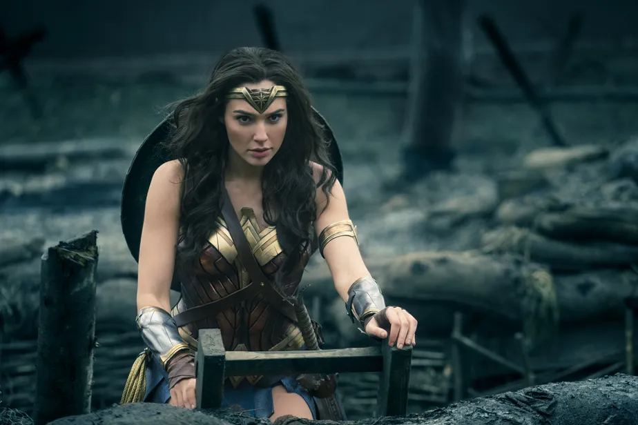
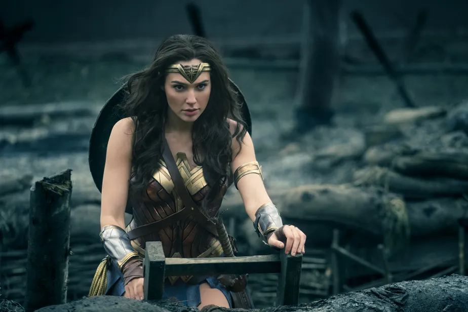

Mulher-Maravilha. Princesa e Embaixadora das Amazonas da Ilha Paraíso, filha da rainha das amazonas, Hipólita. Ela foi mandada ao “mundo dos homens” para propagar a paz, sendo a defensora da verdade e da vida na luta entre os homens e o firmamento, entre os mortais e os deuses. Possuindo habilidades super-humanas e seu laço da verdade, ela faz parte da Trindade da DC Comics e muitas vezes funciona como o equilíbrio entre os extremos de Superman e Batman. É parte integrante da Liga da Justiça.